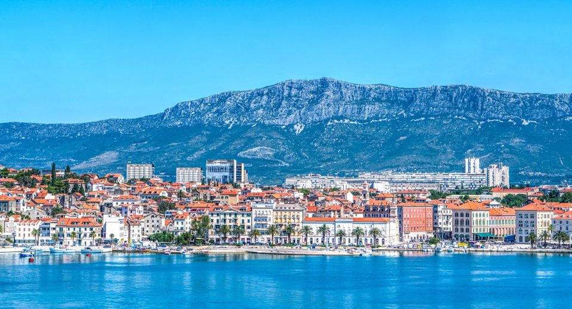

Aмстердам

Амстердам - Градот на вода, градот на лалињата, градот со импресивна архитектура, градот кој лежи на бреговите на две водни маси, заливот Ајселмер и реката Амстел. Град кој спие на 160 канали кои го делат на околу 90 островчиња, поради што гордо го носи епитетот - Венеција на Западна Европа. Центарот на Амстердам го краси плоштадот Дам на кој се наоѓа класицистичката кралска палата од 17 век - втората резиденција на кралското семејство, реформистичката Нова Црква од 15 век.
Торино
За многумина Торино е само индустриски град, еден од многуте во Италија. Но доколку го посетите ќе сфатите дека Торино е метропола која ќе ги задоволи дури и најпребирливите вкусови, било да се работи за образование, култура, спорт и забава. Причина плус за мојата посета е ФК Јувентус. Мојот омилен фудбалски клуб, еден од најдобрите во светот. Импресивно е да се виде цел комплекс, начинот на кој работат, како секој си го знае местото. Доколку сте љубител на спортот, тоа е место кое мора да го посетите.
Сплит
Со целата своја магија распослан на бреговте на Јадранското Море, Сплит е еден од најстарите градови во регионот, во кој преку автентичната архитектура се испреплетуваат минатото и модерната денешница. На светската мапа го ставиле Римјаните, па воопшто не е изненадување тоа што преовладува нивната стара архитектура и во многу наврати Сплит ќе ве потсети на пример на градбите автентични за Венеција. Се разбира, изобилството на плажи во околината на градот, ќе го направи одморот комплетен.